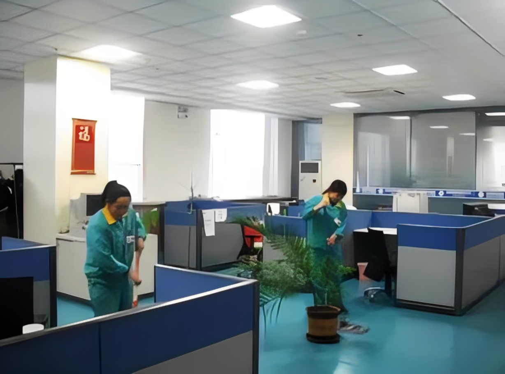

办公楼保洁日常工作流程
1、办公区域保洁
每日上班期间保洁人员应每日定期对办公楼内公共卫生间、会议室、活动室和公共设备设施的清洁工作及各办公室的垃圾收集、简单清洁工作。
2、设施保洁
及时清洁办公区域内各种设施设备上的水渍、污渍。
3、易耗品补充
在上班期间内留意保洁用品的消耗情况，及时更换补充。
4、垃圾收集
定时对办公区域内各个果壳箱、垃圾桶进行检查，并及时更换垃圾袋将装满的垃圾袋暂时存放在垃圾存放间内。
办公楼保洁员工作内容与标准
1、办公楼大厅
地面洁净有光泽，无纸屑、烟头等垃圾，无泥沙、污渍。墙面、天花及玻璃门窗无灰尘、无蜘蛛网，不锈钢公共设施表面保持光亮整洁、无灰尘，垃圾桶内垃圾不超过一半，保持大堂内空气清新、无异味。并做到每天清扫拖洗不少于2次灯饰、门禁开关等公共设施每天擦拭1次，墙面及玻璃门窗每周擦拭1次大厅每天须随时巡回保洁。
2、卫生间
卫生洁具清洁，无水迹、头发、异味。墙面四角干净、无蛛网，地面无脚印、杂物；金属器具保持光亮无浮灰、水迹、绣斑；卫生用品齐全、无破损，空气清新并做到每日4次以上定时检查保洁工作。
办公楼保洁培训内容有哪些
1、保洁技能培训
包括理论和实地操作培训，使每个员工能正确地使用各种清洁设备用品，熟练地操作清洁设备。并且能熟练地掌握保洁清洗流程以及建材家居的保养方法，熟悉特殊清洁的技，常用清洁器械的保养。
2、安全知识培训
安全第一，以人为本。在工作的在过程中难免会有一些高空等特殊环境下的作业，让每一位员工能提高安全意识，在紧急情况下能灵活应变，这也是保洁公司专业的表现，避免给物业单位带来不必要的麻烦。
3、道德礼仪培训
包括职业道德，文明礼貌用语，工作服务态度，仪容仪表、行为举止等方面。员工的整体素质得到了提升，整个团队才会更专业更和谐。
4、心理培训
员工对公司的发展有着重要意义，公司关心每一位为企业付出的员工，为员工们提供心理辅导，摆正心态，让每一位员工在工作中身心健康。
办公室保洁工作流程和标准
（一）公共区域保洁工作流程及清洁标准
工作流程：
1、检查：进入公共区域后，先查看有无异常现象、有无损坏的物品。如发现异常，应先向主管上级报告后再作业。
2、清倒：字纸篓、垃圾桶。清倒字纸篓、集中垃圾袋时，应注意里边有无危险物品，并及时处理。
3、擦抹：从门口开始，由左至右或由右至左，依次擦拭室内家具和墙壁等。擦拭每一件家具时，应由高到低，先里后外。抹墙壁时，重点擦拭墙壁饰物、电灯开关插座盒、门窗、窗台等。大幅墙面、天花板等的清洁为定期进行也可穿插在日常保洁中进行(如每天擦一间或一面)。
4、整理：台面、桌面上的主要用品，如台历、盆栽、烟灰缸等抹净后，应按固定位置放好。如发现局部脏污仍需及时处理。
5、更换：收换垃圾袋。
6、推尘：按照先里后外，先边角、桌下，后大面的程序进行推尘作业。椅子等设备挪动后要原位摆好。发现局部脏污应及时处理。
7、确认：清洁结束后，保洁人员退至边缘(门口)，环视整个区域，确认质量合格。
清洁标准：
1、窗台、墙面、无尘土、无污迹、无擦痕。
2、地面无垃圾、地角线无尘、无污迹、边角隐藏处无垃圾、积尘、无发丝。
3、门、隔断无污迹、无擦痕、无手印。
4、清洁频次：7次/天，检查频次：不间断。
（二）卫生间保洁工作流程及清洁标准
清洁工作流程：
1、进入卫生间前将工作告示牌放在门前，打开门窗通风。
2、蹲便池、小便池要先用夹子夹出大小便器里的杂物然后再冲水，倒入洁厕剂，泡一会儿，冲洗完后再用便池刷刷洗。蹲便池、小便池内四周表面及外部表面均要清洗，检查冲水是否正常，有没有堵塞。
3、用湿毛巾配合便池刷清洁卫生间隔板上的污迹。
4、洗漱台和面盆：用清洁剂和面盆刷洗面盆和水堵。从左到右抹干净洗漱台面，用不掉毛的毛巾从上到下擦拭干净镜子。将洗漱台上物品整齐放回原位。水龙头也要清洗干净，保持光亮。
5、根据定期作业擦拭墙面、天花板、排气扇、卫生间门及门框。
6、清倒垃圾，更换干净垃圾袋。
7、用拖把清洁地面，地面较脏的要使用清洁剂。
8、最后检查是否有漏项。
清洁标准：
1、天花板，墙角，灯具目视无灰尘，蜘蛛网。
2、目视墙壁干净，便器洁净无黄渍。
3、镜面干净明亮无水迹，面盆无污垢，台面无水迹，室内无异味，臭味。
4、地面无纸屑，污渍，积水。
5、清洁频次：7次/天；检查频次：不间断。
上海五美是专业的上海保洁公司，提供写字楼保洁、大型综合商场保洁、工厂保洁、学校保洁、小区保洁、别墅区保洁、办公室保洁、大型游乐园保洁、开荒保洁、大理石翻新和养护、地毯清洗、水箱清洗、地面清洁、外墙清洗、物业管理、日常保洁外包等。欢迎广大新老客户前来咨询！
- 